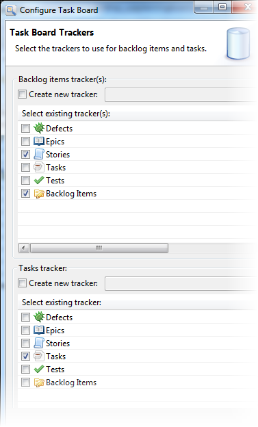
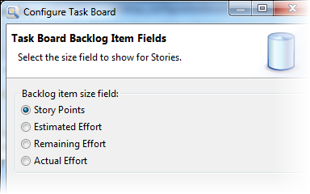
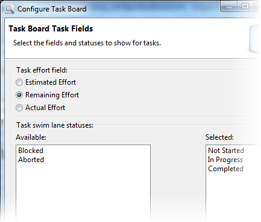
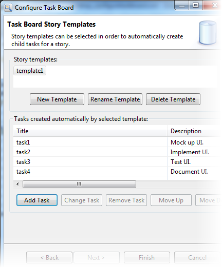

TeamForge project administrators can configure the
task board. Once that's done, projects members can use the task board.
-
To configure the task board, right-click the project and choose
Configure Task Board ....
The task board configuration screen appears.
-
Specify two trackers in the configuration:
- The main tracker that contains the artifacts that define your stories
- The tracker for the tasks that result from breaking down the
stories

For example, if you have trackers for Epics, Stories and Tasks, use the
task board for Stories and Tasks (or Epics and Stories). Note: Alternatively, you can create new
trackers by providing their names.
Click Next.
-
Configure the user interface for the task board.
-
Indicate which tracker field you want to use to specify the story
size.
Typically, you would use either Story Points or Estimated Effort.

Click Next. Do this for each tracker you selected for backlog items (stories).
-
Enter the amount of work to do in the task.
We anticipate you would use the Remaining Effort field for this, but
you can choose any of the effort fields. The value you select controls
the number that shows on the story and task cards in the task board.

-
Select the statuses for your tasks and the order you want them
displayed as swimlanes.
We recommend you have 3 or 4 (maximum) statuses ordered from left to
right in the order that the task would progress; the last swimlane would
represent the "done" status.
Tip: While we do not limit the
number of statuses, the more you have, the less usable the task
board becomes.
-
Click Next.
-
Specify templates to automatically create child tasks for a story.
Note: This step is optional. You can also configure templates by right-clicking
the project and selecting Configure Task Board
Templates....

Templates allow you to provide a named set of common tasks that you might
regularly use to break down a story. For example, you might have tasks like
"Mock up UI", "Implement UI", "Test UI", and "Document UI". Once you define
templates for these tasks, a team member using the task board can add the set of
tasks to a story with a single click. You are allowed to specify the title and
description for tasks.
-
Click Finish.